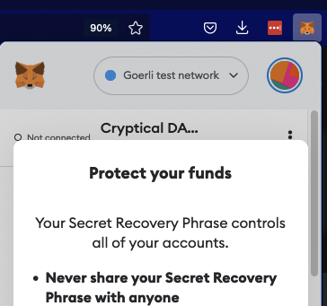

How to try a DAO in your org and why you may want to.
DAOs can help organisations manage core functions such as voting on funding and processing payments.
Here’s a basic guide to setting up the tools to create and use a DAO, as an administrator or a user. We also encourage discussion of the pros, cons and political implications of DAOs.
↠ This guide will form the basis of a workshop at 3.30-5.30pm on 17th Dec 2022 at House Of Annetta by Brick Lane. We will introduce digital wallets and using DAOs. Please email us to RSVP.
Click on the titles below to show the content.
This guide will be updated over time.
Get an Ethereum wallet »
- ↠ Download the Metamask wallet, which is a browser extension for Firefox or Chrome: metamask.io
- ↠ Follow the setup instructions in the extension.
- ↠ Backup your private key securely. We'll only use this wallet for testing for now but you may use it in future to manage tokens, voting rights, or other valuable activity.

Create a DAO »
Choose a DAO platform
There are various options, even amongst Ethereum-based systems, such as DAOHaus and Colony.
We’ll use DAOHaus for our trial. Here's an overview of the platform.
↠ If you want to create the DAO using a testnet (i.e. just using test, free cryptocurrency) then we can use the Ethereum testnet named Goerli.
↠ Get some free Goerli Eth from a faucet. Faucets give Eth to let people test things out, like we're doing here.
Switch Metamask to Goerli network
↠ Then
create the DAO using the summon command.
The settings you use cannot be changed after you’ve created the DAO, so make sure you think them through. Key settings
include voting periods, grace period and proposal costs. You may want to set these low if you’re just trialing the DAO. e.g. a short voting period will let you set up and finalise a vote in under an hour when you’re learning but you’ll obviously want longer if you’re setting up a real DAO where people may need days or longer to cast their vote.
Similarly, proposal costs should be cheap for testing but the real thing so people only make proposals when they really need to. e.g. 1000000000000000 wei is a good low price
Here’s a tester DAO I made earlier, the ab__ playground. We can use this for free and without worrying we'll break something.
↠ You’ll need to get some wrapped Eth (WETH) to vote in the dapp, so use Uniswap to convert some Eth to Weth.
↠ You will then need to add Weth in Metamask with “Import tokens” at the bottom here:
Fyi token contract address (for Weth on Goerli testnet): `0xb4fbf271143f4fbf7b91a5ded31805e42b2208d6` with Token symbol: Weth and Token decimal: 18.
Add DAO members »
Here’s a test members page.
Either apply to join yourself or apply on someone’s behalf by making a membership proposal.
If you are running this in a workshop, assign existing members to set up and manage votes for new members. Make sure you don’t miss the deadlines, you may only have a few minutes to act during each phase!
↠ Click “New Proposal +”, create the proposal, then vote on it, allow the grace period to pass, then process it to enact it.
Members who want to add their personal info, like their name, need to use a service called Ceramic but you can only do this on the main Ethereum network not on the testnet that we use for testing.
Make a funding proposal »
A funding proposal lets members vote to spend DAO’s money
Here‘s a dummy proposal.
↠ To create a new one, select "New Proposal +", then search for "Funding Proposal" (you might need to select "The Classics" in the dropdown).
↠ Add the name of the proposal e.g. "Pay Alex for their time", add the Recipient’s Ethereum address in "Recipient", and add the amount of Eth (in Weth) in the "Payment requested" area. The other fields are not necessary for now.
↠ Submit the proposal request and sign the transaction. Then wait for the voting period to begin, make sure enough members vote to reach quorum, wait for the grace period to pass, then process the result if necessary e.g. pay the person.